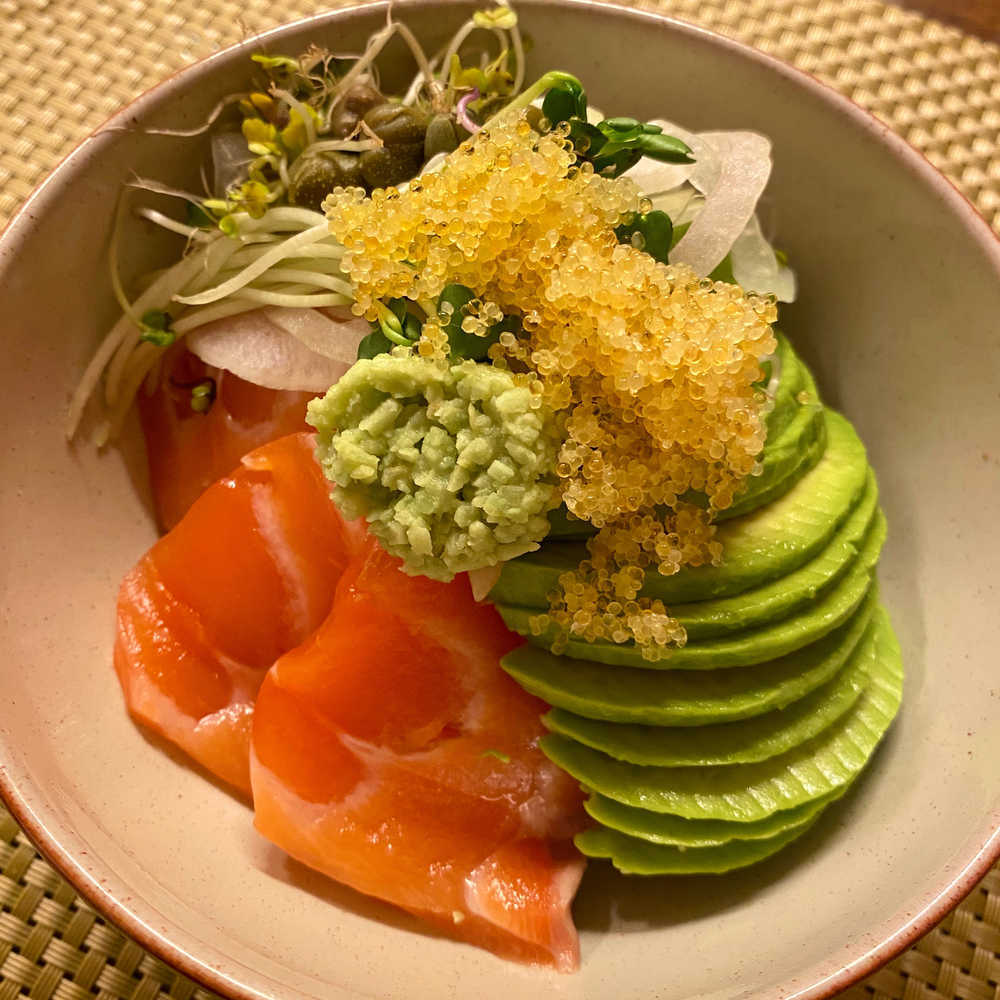

쨔잔!!!
드디어 연어 아보카도 덮밥 만들었지롱 히힣
내가 직접 만든거다ㅏ 나 진짜 잘 만들지 않았어 이호??솔직히 깜짝 놀랐지 이호
진짜 좀 대단한것 같음ㅋㅋㅋㅋㅋㅋㅋㅋ🤪👏🏻👏🏻
아보카도 꺼내서 송송 썰고
연어 이쁘게 올리고✨✨
지금 먹으면서 이호한테 메일 보내고 있는데 너무 맛있다ㅠㅠ
행복해
배는 고프고 요즘 자극적인 음식 많이 먹은것 같으면 연어 아보카도 덮밥 만들어 먹어봐!!
아보카도 후숙도 내가 알려준대로 한번 해보고ㅋㅋㅋㅋ
밥에 간장 참기름 뭐 취향에 따라서 간을 맞추면 되여
꿀맛
어머 밖에 천둥 치고 난리 남,,